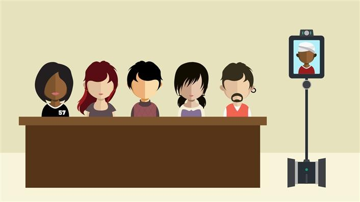

Telepresence robotics allows students who are temporarily unable to attend their classes to continue participating remotely.Telepresence robots are remotely controlled video conferencing devices that are increasingly used in fields such as business and healthcare. As this technology has become more affordable and accessible, higher education institutions have been exploring the capabilities of telepresence robots for distance learning and remote classroom attendance. They are going to be seen a lot more in educational settings, due to their ability to help children “attend” class, even when they cannot physically be there. Kelly McSweeney, writing for ZDnet, reports that, even though telecommuting to school isn’t necessarily an ideal way to learn, the students felt more socially connected with peers, happier, and more academically involved.
With today's technology, the definition of face time has changed. Now, students can use live video chats to see and hear what's going on in the classroom, chat with their friends, join in classroom discussions, or even join extracurricular clubs and go on field trips.
